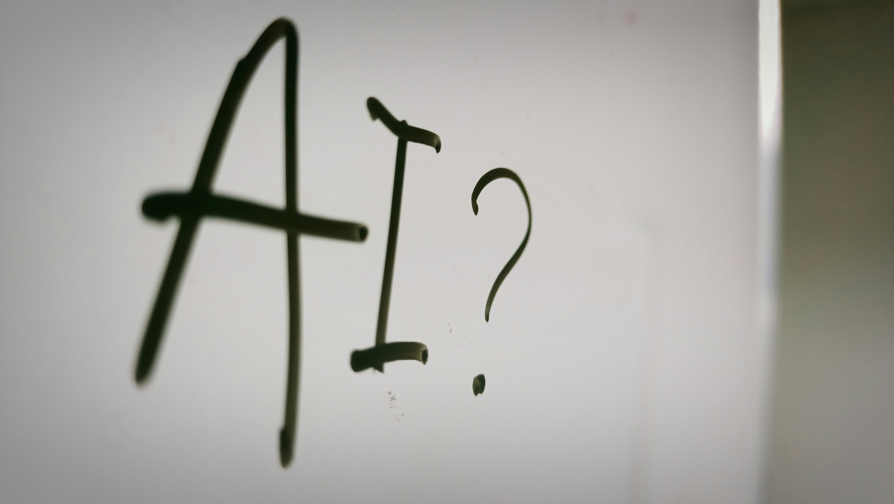

Artificial Intelligence has become one of the most powerful technologies of the modern world. From smartphones and search engines to healthcare and autonomous vehicles, AI is already changing the way humans live and work.
The future of AI is expected to bring even bigger changes. As AI systems become smarter, they will help humans solve complex problems, improve efficiency and create new possibilities across different industries.
The future of Artificial Intelligence focuses on creating intelligent systems that can understand information, learn from experience and assist humans in making better decisions. Future AI will become more accurate, faster and more integrated into everyday life.
In the future, AI will become a normal part of daily activities. Smart assistants, personalized recommendations, automated homes and intelligent devices will make everyday tasks easier and more efficient.
AI will play an important role in healthcare by helping doctors detect diseases earlier, analyze medical data and develop personalized treatments. AI-powered systems can support doctors and improve patient care.
Artificial Intelligence will change the way people work. Some repetitive tasks may become automated, but new careers will also grow in areas such as AI development, data science, robotics and technology management.
Future AI-powered education systems may provide personalized learning experiences. Students could have AI tutors that explain concepts according to their learning speed and style.
AI is designed to assist humans, not completely replace human creativity and decision-making. The future will likely involve humans and AI working together to achieve better results.
The future of Artificial Intelligence is full of opportunities. As AI continues to evolve, it will transform industries, improve quality of life and create new possibilities that were once considered impossible.
For Wanderur Journal, AI is not just about technology. It is about understanding the innovations that will shape the future world.